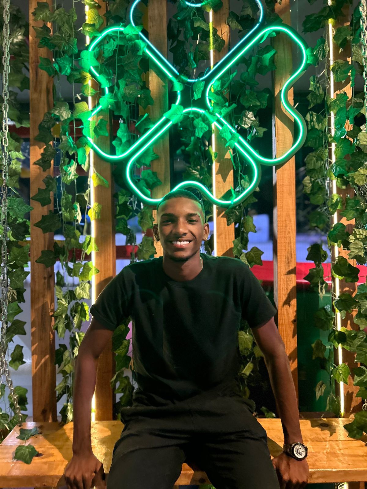

Denner Simão dos Santos
Gosta muito de tecnologia, tem formação em desenvolvimento web full-stack. Além disso, sua jornada não se limita apenas ao mundo digital, também é um atleta dedicado.



Gosta muito de tecnologia, tem formação em desenvolvimento web full-stack. Além disso, sua jornada não se limita apenas ao mundo digital, também é um atleta dedicado.

Sou formado em desenvolvimento web pelo Instituto da Oportunidade Social (IOS), e sou extremamente grato à turma e aos professores que marcaram minha trajetória na tecnologia. Eles foram essenciais para minha formação e paixão pela área

Fazer designs criativos com o aplicativo Canva
Estudar novos idiomas e culturas de outros países
Participar de projetos sociais na comunidade periférica